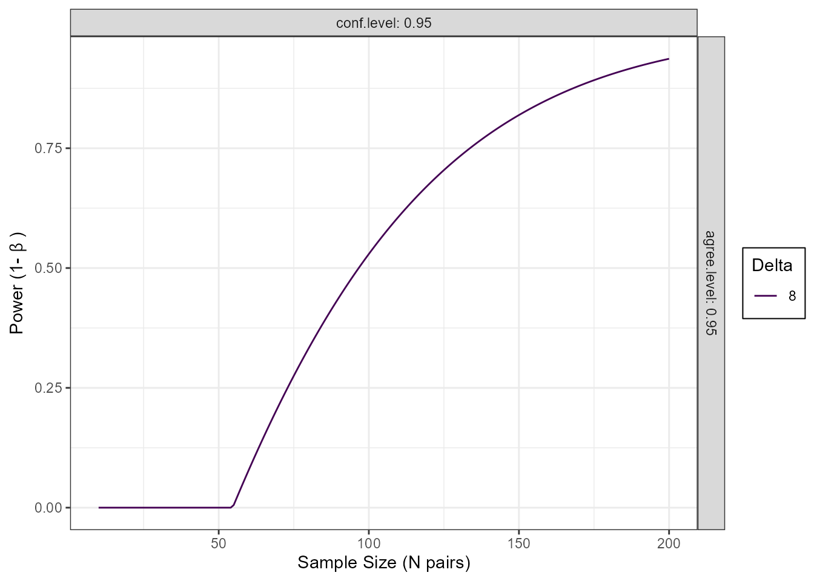
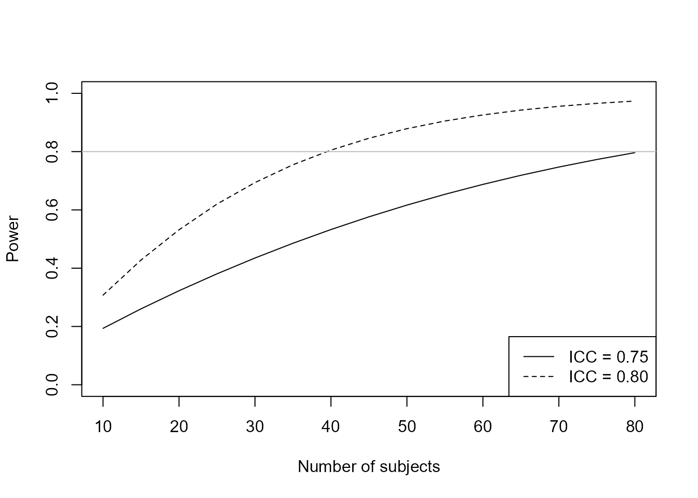

Power Analysis and Sample Size Determination for Agreement Studies
Aaron R. Caldwell
Last Updated: 2026-10-21
Source:vignettes/power_sample_size_vignette.Rmd
power_sample_size_vignette.RmdIntroduction
This vignette provides comprehensive guidance on power analysis and
sample size determination for method comparison and agreement studies
using the SimplyAgree package.
Available Methods
SimplyAgree implements four approaches to power/sample
size calculations for agreement (limits of agreement) studies:
-
power_agreement_exact()- Exact agreement test (Shieh 2019) -
power_agreement_limit()- Bland-Altman limits of agreement test (Lu et al. 2016) (blandPowerCurve()for power curves) -
agree_expected_half()- Expected half-width criterion (Jan and Shieh 2018) -
agree_assurance()- Assurance probability criterion (Jan and Shieh 2018)
and two for reliability studies that estimate an intraclass correlation coefficient (ICC; see Planning a Reliability Study):
-
power_icc()- Power of the ICC test (Walter et al. 1998) -
precision_icc()- Width of the ICC confidence interval (Zou 2012; Mondal et al. 2024)
Understanding the Approaches
Hypothesis Testing vs. Estimation
The methods divide into two categories:
Hypothesis Testing (binary decision):
-
power_agreement_exact()- Tests if central proportion, essentially tolerance intevals, are within the maximal allowable difference -
power_agreement_limit()- Tests if confidence intervals of limits of agreement fall within the maximal allowable difference
Estimation (quantifying precision):
-
agree_expected_half()- Controls average CI half-width of limits of agreement -
agree_assurance()- Controls probability of achieving target CI half-width of limits of agreement
Method 1: Exact Agreement Test
Overview
Tests whether the central P* proportion of paired differences falls within the maximal allowable difference [-delta, delta].
Hypotheses:
- H0: Methods disagree (central portion extends beyond bounds)
- H1: Methods agree (central portion within bounds)
Usage
power_agreement_exact(
n = NULL, # Sample size
delta = NULL, # Tolerance bound
mu = 0, # Mean of differences
sigma = NULL, # SD of differences
p0_star = 0.95, # Central proportion (tolerance coverage)
power = NULL, # Target power
alpha = 0.05, # Significance level
m = 1, # Paired measurements per subject
icc = 0 # ICC of the differences (if m > 1)
)Specify exactly three of: n, delta, power, sigma.
Example: Sample Size Calculation
# Blood pressure device comparison
result <- power_agreement_exact(
delta = 7, # +/-7 mmHg tolerance
mu = 0.5, # Expected bias
sigma = 2.5, # Expected SD
p0_star = 0.95, # 95% must be within bounds
power = 0.80, # 80% power
alpha = 0.05
)
print(result)
#>
#> Power for Exact Method for Assessing Agreement Between Two Methods
#>
#> n = 34
#> delta = 7
#> mu = 0.5
#> sigma = 2.5
#> p0_star = 0.95
#> p1_star = 0.9939889
#> alpha = 0.05
#> power = 0.8018401
#> critical_value = 13.57038
#> m = 1
#> icc = 0
#> n.obs = 34
#>
#> NOTE: H0: Central 95% of differences not within [-delta, delta]
#> H1: Central 99.4% of differences within [-delta, delta]
#> n is the number of pairs. Two measurements per unit; one for each method.Method 2: Bland-Altman Limits of Agreement
Overview
Calculates power for the Bland-Altman approach: agreement is
concluded when the confidence intervals of both limits of agreement (the
approximate Bland-Altman intervals, as in
agreement_limit(loa_calc = "blandaltman")) fall within
\([-\delta, \delta]\). Power follows
the method of Lu et al. (2016), using their exact formula (eq. 5)
as PASS does. Their Table 1 used an approximation and some of its sample
sizes are slightly too large.
Usage
power_agreement_limit(
n = NULL, # Sample size (pairs)
delta = NULL, # Maximal allowable difference
mu = 0, # Mean difference
sigma = NULL, # SD of differences
power = NULL, # Target power
conf.level = 0.95, # CI confidence level
agree.level = 0.95, # LOA agreement level
m = 1, # Paired measurements per subject
icc = 0 # ICC of the differences (if m > 1)
)Specify three of n, delta,
sigma and power.
Example: Sample Size
power_agreement_limit(delta = 7, mu = 0.5, sigma = 2.5, power = 0.80)
#>
#> Power for Bland-Altman Limits of Agreement (Lu et al. 2016)
#>
#> n = 60
#> delta = 7
#> mu = 0.5
#> sigma = 2.5
#> conf.level = 0.95
#> agree.level = 0.95
#> power = 0.8059154
#> m = 1
#> icc = 0
#> n.obs = 60
#>
#> NOTE: H0: CIs of the 95% limits of agreement not within [-delta, delta]
#> H1: CIs of the limits of agreement within [-delta, delta]
#> n is the number of pairs. Two measurements per unit; one for each method.Power Curves
blandPowerCurve() (superseded) evaluates the same power
over a range of sample sizes and settings, for plotting:
blandPowerCurve(
samplesizes = seq(10, 100, 1), # Range of sample sizes
mu = 0, # Mean difference
SD, # SD of differences
delta, # Tolerance bound(s)
conf.level = 0.95, # CI confidence level
agree.level = 0.95, # LOA agreement level
m = 1, # Paired measurements per subject
icc = 0 # ICC of the differences (if m > 1)
)
# Generate power curve
pc <- blandPowerCurve(
samplesizes = seq(10, 200, 1),
mu = 0,
SD = 3.3,
delta = 8,
conf.level = 0.95,
agree.level = 0.95
)
# Plot
plot(pc, type = 1)
# Find n for 80% power
find_n(pc, power = 0.8)
#> # A tibble: 1 × 7
#> delta conf.level agree.level m icc power N
#> <dbl> <dbl> <dbl> <dbl> <dbl> <dbl> <dbl>
#> 1 8 0.95 0.95 1 0 0.800 145Method 3: Expected Half-Width
Overview
Determines sample size to ensure average CI half-width <= delta across hypothetical repeated studies.
Usage
agree_expected_half(
conf.level = 0.95, # CI confidence level
delta = NULL, # Target expected half-width
pstar = 0.95, # Central proportion
sigma = 1, # SD of differences
n = NULL, # Sample size
m = 1, # Paired measurements per subject
icc = 0 # ICC of the differences (if m > 1)
)Specify either n OR delta.
Example: Sample Size for Precision
# Want E[H] <= 2.5*sigma
result <- agree_expected_half(
conf.level = 0.95,
delta = 2.5, # As multiple of sigma
pstar = 0.95,
sigma = 1 # Standardized
)
print(result)
#>
#> Expected half-width and sample size for limits of agreement
#>
#> n = 52
#> conf.level = 0.95
#> target.delta = 2.5
#> actual.delta = 2.49677
#> pstar = 0.95
#> sigma = 1
#> g = 2.509039
#> c = 1.004914
#> zp = 1.959964
#> m = 1
#> icc = 0
#> n.obs = 52
#>
#> NOTE: n is the number of pairs. Two measurements per unit; one for each method.Method 4: Assurance Probability
Overview
Determines sample size to ensure probability that CI half-width <= omega is at least (1-gamma).
Stronger guarantee than expected half-width — ensures specific probability of achieving target precision.
Usage
agree_assurance(
conf.level = 0.95, # CI confidence level
assurance = 0.90, # Target assurance probability
omega = NULL, # Target half-width bound
pstar = 0.95, # Central proportion
sigma = 1, # SD of differences
n = NULL, # Sample size
m = 1, # Paired measurements per subject
icc = 0 # ICC of the differences (if m > 1)
)Specify either n OR omega.
Example: Sample Size with Guarantee
# Want 90% probability that H <= 2.5*sigma
result <- agree_assurance(
conf.level = 0.95,
assurance = 0.90, # 90% probability
omega = 2.5, # Target bound
pstar = 0.95,
sigma = 1
)
print(result)
#>
#> Assurance probability & sample size for Limits of Agreement
#>
#> n = 115
#> conf.level = 0.95
#> assurance = 0.9
#> actual.assurance = 0.9024825
#> omega = 2.5
#> pstar = 0.95
#> sigma = 1
#> g = 2.306169
#> zp = 1.959964
#> m = 1
#> icc = 0
#> n.obs = 115
#>
#> NOTE: n is the number of pairs. Two measurements per unit; one for each method.Decision Guide for the Method
Research Goal?
|
|- Hypothesis Testing ->
| \- Need exact Type I error control -> Power for Agreement
|
\- Precision Estimation ->
|- Average precision sufficient -> Expected Half-Width
\- Need probabilistic guarantee -> Assurance Probability
Reliability (ICC) study?
|
|- Show the ICC exceeds a threshold -> power_icc()
\- Estimate the ICC precisely -> precision_icc()Handling Clustered/Nested Data
The Problem
Many studies have clustered data, with several paired measurements per subject (e.g., repeated measures, several occasions, or several sites per subject). The standard formulas assume that pairs are independent1. Counting every pair as independent overstates the precision, so a study planned that way is too small.
Clustering in the Functions
All four agreement functions take two extra arguments:
-
m: the number of paired measurements per subject (default 1, independent pairs) -
icc: the intraclass correlation of the paired differences, i.e. the share of the variance of the differences that is between subjects
With m > 1, n is the number of
subjects (the output also gives n.obs = n * m),
and sigma (or SD) is the
total SD of the differences, between- plus
within-subject.
Note that icc is not the test-retest ICC of the
measurements themselves. Two methods can each be highly reliable
(measurement ICC of 0.9) while their differences have a small ICC,
because the subject’s true value cancels in the difference. The ICC of
the differences reflects how much the bias between the methods
varies from subject to subject. To put it another way, a high ICC would
reflect that the bias is consistent within a subject but differs across
subjects (i.e., the bias is largely subject-specific). Caveat
emptor but I personally believe it is reasonble to suspect that in
many cases the ICC for nested agreement studies would be low (ICC <
0.10).
Caveat emptor but I personally believe it is reasonable to expect the ICC of the differences to be low (e.g., < 0.10) in many nested agreement studies. When two methods measure the same quantity, the between-subject variation that drives a high measurement ICC largely cancels in the difference, leaving mostly within-subject error. Meaningful subject-specific bias requires something systematic, such as proportional bias (where the difference depends on the magnitude of the measured value) or a characteristic of the subject that affects one method more than the other (e.g., skin tone for optical sensors, or body composition for impedance-based measures). If such mechanisms are plausible, a higher ICC should be expected. Varying the ICC for these power analyses is a good sensitivity check.
Example: Repeated Measures Design
Three paired measurements per participant, with an ICC of the differences of 0.15:
# Independent pairs
n_indep <- power_agreement_exact(
delta = 7, mu = 0.5, sigma = 2.5,
p0_star = 0.95, power = 0.80, alpha = 0.05
)$n
n_indep
#> [1] 34
# 3 pairs per participant
result <- power_agreement_exact(
delta = 7, mu = 0.5, sigma = 2.5,
p0_star = 0.95, power = 0.80, alpha = 0.05,
m = 3, icc = 0.15
)
result
#>
#> Power for Exact Method for Assessing Agreement Between Two Methods
#>
#> n = 12
#> delta = 7
#> mu = 0.5
#> sigma = 2.5
#> p0_star = 0.95
#> p1_star = 0.9939889
#> alpha = 0.05
#> power = 0.8047327
#> critical_value = 12.17416
#> m = 3
#> icc = 0.15
#> n.obs = 36
#>
#> NOTE: H0: Central 95% of differences not within [-delta, delta]
#> H1: Central 99.4% of differences within [-delta, delta]
#> n is the number of subjects, each with m = 3 paired measurements (n.obs pairs in total).
#> Assumes balanced compound symmetry with ICC of the differences = 0.15.Result: 34 independent pairs, or 12 participants with 3 pairs each (36 pairs in total).
The other functions work the same way:
agree_expected_half(delta = 2.5, pstar = 0.95, m = 3, icc = 0.15)$n
#> [1] 20
agree_assurance(omega = 2.5, assurance = 0.90, pstar = 0.95, m = 3, icc = 0.15)$n
#> [1] 42What the Functions Assume
The calculations assume a balanced design (every
subject has m pairs) and a one-way random-effects (compound
symmetry) model for the differences. Under that model:
- The mean difference (the bias) has variance \(\sigma^2 \times \text{DEFF} / (n m)\), with the familiar design effect \(\text{DEFF} = 1 + (m - 1) \times \text{ICC}\).
- The estimated total variance, \(S^2 = MS_B / m + (m - 1) / m \times MS_W\), is a weighted sum of two chi-square variables with \(n - 1\) and \(n(m - 1)\) degrees of freedom. The functions integrate over this distribution exactly, in place of the single chi-square used for independent pairs.
With m = 1 the published methods are reproduced exactly.
With m > 1, the expected half-width, assurance and power
agree with simulation from this model to Monte Carlo error.
power_agreement_limit() and blandPowerCurve()
use a simpler Satterthwaite approximation, in keeping with the
approximate method of Lu et al. (2016).
Why Not Just Inflate the Sample Size?
A common approximation from survey sampling is to multiply the
independent sample size by \(\text{DEFF} = 1 +
(m - 1) \times \text{ICC}\) and divide by \(m\) to get the number of subjects. That is
correct for the mean, but the limits of agreement also depend
on the SD of the differences (I made this error in my earlier
writing on this). Its design effect is much smaller, about \(1 + (m - 1) \times \text{ICC}^2\).
Inflating the whole sample size by DEFF therefore overstates the
penalty, more so as m grows:
n_indep <- power_agreement_exact(delta = 7, mu = 0.5, sigma = 2.5,
p0_star = 0.95, power = 0.80)$n
m <- 4
for (ICC in c(0, 0.05, 0.10, 0.20, 0.40)) {
DEFF <- 1 + (m - 1) * ICC
K_simple <- ceiling(ceiling(n_indep * DEFF) / m)
K_exact <- power_agreement_exact(delta = 7, mu = 0.5, sigma = 2.5,
p0_star = 0.95, power = 0.80,
m = m, icc = ICC)$n
cat(sprintf("ICC = %.2f: simple DEFF %2d participants, exact %2d\n",
ICC, K_simple, K_exact))
}
#> ICC = 0.00: simple DEFF 9 participants, exact 9
#> ICC = 0.05: simple DEFF 10 participants, exact 9
#> ICC = 0.10: simple DEFF 12 participants, exact 9
#> ICC = 0.20: simple DEFF 14 participants, exact 10
#> ICC = 0.40: simple DEFF 19 participants, exact 13The simple inflation is conservative. So I think it is still a reasonable rule of thumb for designs the functions do not cover.
Estimating the Inputs from Pilot Data
Fit an intercept-only mixed model to the pilot differences. The two
variance components give icc and sigma:
fit <- lme4::lmer(diff ~ 1 + (1 | id), data = pilot)
vc <- as.data.frame(lme4::VarCorr(fit))$vcov # between, within
icc <- vc[1] / sum(vc)
sigma <- sqrt(sum(vc))Pilot estimates of icc are imprecise; check how
sensitive the sample size is to plausible values.
When to Use Simulation Instead
The calculations do not cover:
- Unbalanced designs (different numbers of pairs per subject)
- Other correlation structures (e.g., autocorrelation over time)
- Several levels of nesting
- Analyses other than the planned procedure. For example,
power_agreement_exact()gives the power of Shieh’s exact test; judging agreement by whether the limits fromtolerance_limit()fall within \([-\delta, \delta]\) is less powerful (see?power_agreement_exact).
For these, use a simulation-based power analysis with the analysis you intend to run. That said, these functions can still provide a useful approximation, placing the required sample size in the right ballpark even when the design departs from their assumptions (e.g., unbalanced designs).
Complete Example with Clustering
# Study parameters
sigma <- 3.3 # total SD of the differences
delta <- 7
m <- 4 # paired measurements per participant
ICC <- 0.15 # ICC of the differences
dropout <- 0.20 # expecting 20% dropout
# Participants needed
result <- power_agreement_exact(
delta = delta, mu = 0, sigma = sigma,
p0_star = 0.95, power = 0.80, alpha = 0.05,
m = m, icc = ICC
)
# Account for dropout
K_final <- ceiling(result$n / (1 - dropout))
# Summary
cat("Participants (no dropout):", result$n, "\n")
#> Participants (no dropout): 158
cat("Participants to recruit:", K_final, "\n")
#> Participants to recruit: 198
cat("Total paired measurements:", K_final * m, "\n")
#> Total paired measurements: 792Planning a Reliability Study (ICC)
A reliability study asks whether a measurement ranks subjects
consistently, summarised by an intraclass correlation coefficient (ICC)
and analysed with icc_test() (see the reliability analysis
vignette). The same two goals apply as for agreement:
-
Hypothesis testing: show that the ICC is above a
threshold (e.g. 0.6), with
power_icc(). -
Estimation: make the confidence interval for the
ICC narrow enough, with
precision_icc().
Both work like stats::power.t.test(): leave exactly one
argument as NULL (by default the number of subjects,
n) and it is solved for. k is the number of
measurements per subject (trials, occasions or raters).
model is "oneway" (the default) or
"twoway", which is the consistency ICC, ICC(C,1), of
icc_test(). With complete, normally distributed data, both
calculations are exact: the F ratio behind the ICC test and interval is
a scaled central F variable whatever the true ICC (McGraw and Wong
1996).
Power for an ICC test
How many subjects are needed to show, with two trials and 80% power, that the consistency ICC is above 0.6 when it is really 0.8?
power_icc(rho0 = 0.6, rho1 = 0.8, k = 2, power = 0.80,
model = "twoway", alternative = "greater")
#>
#> Power calculation for the two-way consistency ICC, ICC(C,1) (exact F distribution)
#>
#> n = 39.43736
#> k = 2
#> rho0 = 0.6
#> rho1 = 0.8
#> sig.level = 0.05
#> power = 0.8
#> alternative = greater
#>
#> NOTE: n is the number of subjects; round up to a whole number.
#> n = number of subjects, k = measurements per subjectRound up: 40 subjects. The same test would then be run with
icc_test(..., null.value = 0.6, alternative = "greater").
Subjects can be traded for measurements. With only 20 subjects
available, solve for k instead:
power_icc(n = 20, k = NULL, rho0 = 0.6, rho1 = 0.8, power = 0.80,
model = "twoway", alternative = "greater")
#>
#> Power calculation for the two-way consistency ICC, ICC(C,1) (exact F distribution)
#>
#> n = 20
#> k = 5
#> rho0 = 0.6
#> rho1 = 0.8
#> sig.level = 0.05
#> power = 0.8
#> alternative = greater
#>
#> NOTE: n = number of subjects, k = measurements per subjectFive trials per subject would be needed.
A power curve over a range of sample sizes is a useful sensitivity analysis, here for an ICC of 0.75 or 0.8 under the alternative:
n_seq <- seq(10, 80, by = 5)
pw <- sapply(c(0.75, 0.80), function(r1) {
sapply(n_seq, function(n) {
power_icc(n = n, k = 2, rho0 = 0.6, rho1 = r1, model = "twoway",
alternative = "greater")$power
})
})
matplot(n_seq, pw, type = "l", lty = 1:2, col = 1, ylim = c(0, 1),
xlab = "Number of subjects", ylab = "Power")
abline(h = 0.8, col = "grey")
legend("bottomright", legend = c("ICC = 0.75", "ICC = 0.80"), lty = 1:2)
Precision of an ICC
When the goal is to estimate the ICC rather than to test it, plan for
the width of its 95% confidence interval (upper minus lower limit).
Because the width varies from sample to sample, assurance
sets the probability that the interval is no wider than planned; the
default, 0.5, plans for the median width.
# Median width of 0.2 around an ICC of 0.8, with three trials
precision_icc(rho = 0.8, k = 3, width = 0.2, model = "twoway")
#>
#> Precision (confidence interval width) calculation for the two-way consistency ICC, ICC(C,1) (exact F distribution)
#>
#> n = 36.74614
#> k = 3
#> rho = 0.8
#> width = 0.2
#> conf.level = 0.95
#> assurance = 0.5
#>
#> NOTE: n is the number of subjects; round up to a whole number.
#> n = number of subjects, k = measurements per subject; width = upper minus lower limit
# The same width with 80% assurance
precision_icc(rho = 0.8, k = 3, width = 0.2, assurance = 0.8,
model = "twoway")
#>
#> Precision (confidence interval width) calculation for the two-way consistency ICC, ICC(C,1) (exact F distribution)
#>
#> n = 48.68426
#> k = 3
#> rho = 0.8
#> width = 0.2
#> conf.level = 0.95
#> assurance = 0.8
#>
#> NOTE: n is the number of subjects; round up to a whole number.
#> n = number of subjects, k = measurements per subject; width = upper minus lower limitPlanning for the median width needs 37 subjects; a guarantee that the
interval will be that narrow 80% of the time needs 49. For a one-sided
goal (a lower confidence limit above some value), use
power_icc() with alternative = "greater": the
probability that the lower limit exceeds rho0 is the power
of the one-sided test.
Average measures
If the measurement used in practice will be the mean of the
k trials, plan for the average-measure ICC, ICC(k) or
ICC(C,k), with unit = "average". The ICC values and the
width are then on the average-measure scale, and the calculations remain
exact (the average-measure ICC is the Spearman-Brown projection of the
single-measure ICC):
precision_icc(rho = 0.9, k = 3, width = 0.1, assurance = 0.8,
model = "twoway", unit = "average")
#>
#> Precision (confidence interval width) calculation for the two-way consistency average-measure ICC, ICC(C,k) (exact F distribution)
#>
#> n = 70.17474
#> k = 3
#> rho = 0.9
#> width = 0.1
#> conf.level = 0.95
#> assurance = 0.8
#>
#> NOTE: n is the number of subjects; round up to a whole number.
#> n = number of subjects, k = measurements per subject; width = upper minus lower limitMissing measurements and dropout
If some measurements will be missing here and there (a missed trial,
a rater who skipped a subject), give the expected proportion of missing
subject-by-item cells in missing. The calculation then
follows the REML analysis of icc_test(method = "reml"),
using the observed-data degrees of freedom. This is an approximation,
but in simulations with up to 30% missing the approximate power was
within 0.035 of the simulated power.
power_icc(rho0 = 0.6, rho1 = 0.8, k = 2, power = 0.80, model = "twoway",
alternative = "greater", missing = 0.15)
#>
#> Power calculation for the two-way consistency ICC, ICC(C,1) (F distribution with observed-data df; approximate)
#>
#> n = 51.49918
#> k = 2
#> rho0 = 0.6
#> rho1 = 0.8
#> sig.level = 0.05
#> power = 0.8
#> alternative = greater
#> missing = 0.15
#>
#> NOTE: n is the number of subjects; round up to a whole number.
#> approximate: 15% of measurements missing at random, analysed with icc_test(method = "reml")
#> n = number of subjects, k = measurements per subjectWith 15% of measurements missing, 52 subjects are needed instead of 40.
Subjects lost entirely are different, and the typical dropout adjustment should be applied.
Other designs
The exact calculations cover the one-way and two-way consistency ICCs. They can still guide other designs, as long as the direction of the error is known:
- Absolute agreement ICC, ICC(A,1), and the CCC. These have no exact F distribution. When the trials or raters differ little systematically, ICC(A,1) is close to ICC(C,1) and the consistency calculation is a good guide. When they differ, power is lower and intervals are wider, most of all with 2 or 3 items. Treat the consistency result as a lower bound on the number of subjects needed to achieve the desired level of statistical power.
- Non-normal data. With skewed or heavy-tailed data the F-based intervals are wider and cover less than planned. Allow a margin, or plan for a bootstrap analysis with a larger sample.
-
Published tables.
method = "approximate"reproduces the closed forms of Walter et al. (1998) (power) and Zou (2012) (precision), for the one-way ICC only. The exact method is preferred (Mondal et al. 2024).
power_icc(rho0 = 0.6, rho1 = 0.8, k = 2, power = 0.80,
alternative = "greater", method = "approximate")
#>
#> Power calculation for the one-way ICC, ICC(1) (approximate closed form)
#>
#> n = 38.60635
#> k = 2
#> rho0 = 0.6
#> rho1 = 0.8
#> sig.level = 0.05
#> power = 0.8
#> alternative = greater
#>
#> NOTE: n is the number of subjects; round up to a whole number.
#> n = number of subjects, k = measurements per subject